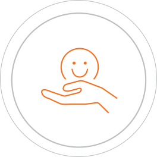
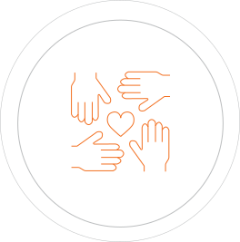
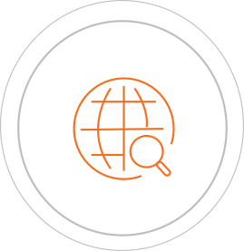
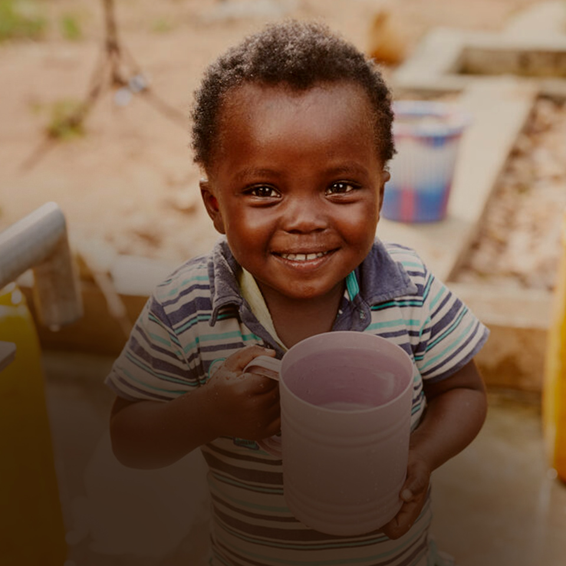
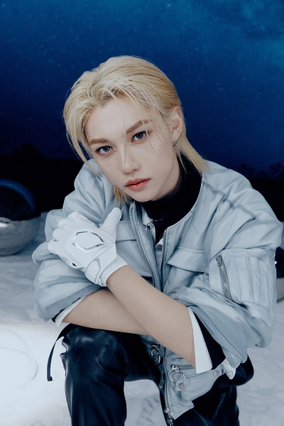
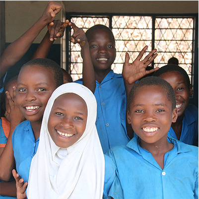
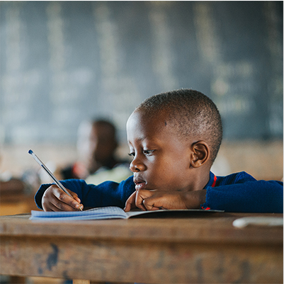

주황우산은 소중하게 모인 후원금을 가장 필요한 곳에 가장 효율적으로 사용합니다.

주황우산은 도움이 필요한 아동들과 이웃의 마음까지 치유하는 섬세함을 잊지 않습니다.

주황우산은 도움이 절실한 국내외 모든 이들이 소외되지 않도록 지금 이 순간에도 모든 노력을 기울이고 있습니다.
정기후원은 개인의 생존 문제를 넘어 본질적인 사회구조를 변화시킵니다.
일상에 깃든 도움의 손길은 변하지 않을 것 같던 세상에 커다란 희망의 바람을 일으킵니다.


한번 나눔이 모여 세상을 바꿀수 있습니다.
여러분의 작은 일상을 나누는 일, 기적이 되어 돌아옵니다.



- 기업의 가치와 사회변화를 고려한 맞춤형 사회 공헌활동 제안
- 국내외 저소득층 지원뿐 아니라 환경문제등 다양한 사회문제 해결방안 제안
- 한국가이드스타 최고등급 획득(재무안정성, 효율성, 잭무성과 투명성 평가)
- 정기적인 외부 감사 진행

- 1999년부터 축적된 다양한 경험 및 데이터 보유
- 국내 유명기업들과 파트너십 수행 및 유지